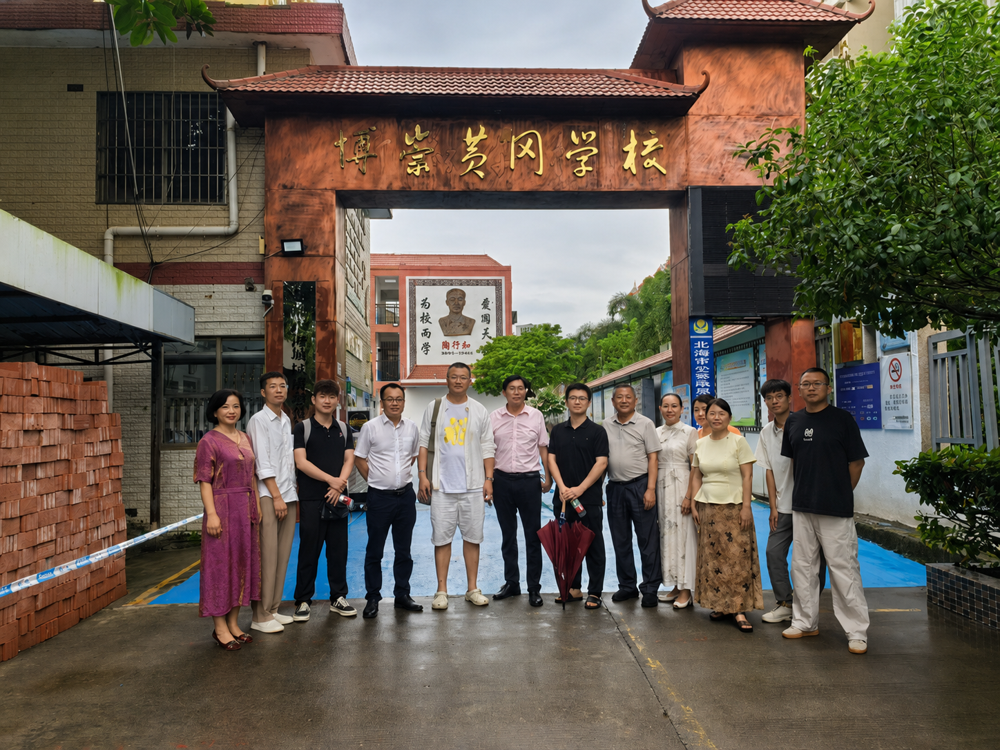

中科明心与北海市海城区博崇黄冈学校开展教育项目交流
6月15日，中科明心（北海）智能科技有限公司团队与北海市海城区博崇黄冈学校举行教育项目交流座谈会。双方围绕人工智能技术在教育教学中的应用、学生学习能力培养、心理健康支持、家校协同及课程试点等内容进行了交流。

随着人工智能技术加快发展，知识获取方式和人才培养需求正在发生变化。座谈会上，与会人员结合当前基础教育实际，就学生学习动力不足、学习效率不高、心理压力增大，以及传统教学方式如何适应未来社会发展需要等问题交换了意见。
中科明心团队介绍了以人工智能、学习能力训练和优秀传统文化教育相结合的“心智能”教育构想。该构想注重从知识传授向能力培养延伸，倡导通过课程设计和实践训练，引导学生主动发现问题、理解知识、形成能力，促进学生身心协调发展。
在人工智能应用方面，项目拟运用大模型等数字技术辅助教师整理课程资源、设计学习任务和分析学习情况，探索翻转课堂、分层教学等教学方式。相关负责人表示，人工智能主要发挥辅助作用，教师仍是教学活动的组织者和学生成长的引导者。

在学习能力培养方面，项目拟围绕专注力、记忆力、阅读理解力和表达能力等内容开展训练，并根据学生年龄特点和实际情况，对训练内容、实施方式和评价标准进行进一步论证。项目还提出，可结合相关技术手段，对学生学习状态进行观察和分析，为后续教学调整提供参考。
在育人内容方面，中科明心提出，将优秀传统文化教育与体育、艺术等内容相结合，引导学生加强自我认识、自我管理和责任意识，培养健全人格和积极心态。其中，阳明心学有关知行合一、致良知等思想，将作为传统文化教育内容之一，以适合青少年理解和接受的方式融入课程实践。
双方还围绕项目落地路径进行了讨论。根据初步设想，项目将分阶段推进。
第一阶段，组建项目工作团队，进一步完善课程体系、教学标准和实施方案。项目拟由相关教育、心理和课程研发人员共同参与，围绕教学内容、师资培养、课堂组织和效果评估等环节开展准备工作，并探索由专业导师、青年导师和陪伴教师共同参与的教学支持模式。
第二阶段，在充分征求学校、教师、学生和家长意见的基础上，选择适当班级开展小范围试点。试点将重点检验课程内容的适用性、教学方式的可操作性以及学生的实际参与情况。同时，项目拟通过家长交流、家庭教育指导等方式，加强家校沟通，帮助家长更加科学地认识学生成长规律和个体差异。

第三阶段，根据试点情况进行总结评估。对实践中形成的有效做法，经论证完善后，可结合学校实际逐步推广。双方还就利用学校现有条件开展周末课程、研学实践和科技手工活动等内容交换了意见，具体项目仍需进一步研究确定。
座谈会上，中科明心团队还介绍了项目在教育心理、课程研发和传统文化研究等方面的专家资源。团队表示，后续将加强与相关高校、科研机构和专业人员的沟通合作，为课程论证、教师培训和项目评估提供支持。有关合作事项将严格遵循教育教学规律，按照相关政策和学校管理要求稳步推进。
双方表示，此次交流为进一步了解彼此需求、探讨教育科技与学校教学实践相结合的路径奠定了基础。下一步，将围绕合作内容、实施范围、师资配置、课程评价和安全管理等事项继续沟通，在充分论证的基础上推动有关工作。
